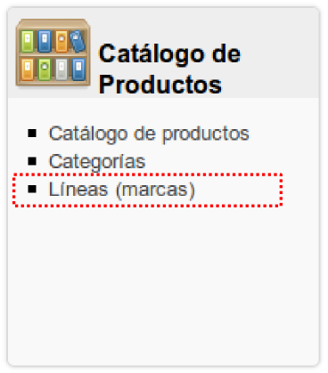
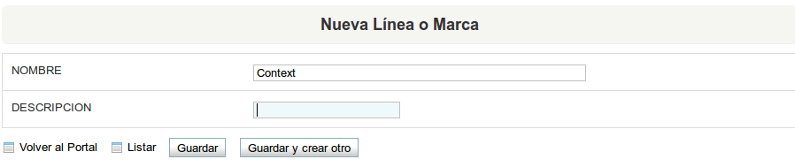

Anterior
Siguiente
5.2. Registrar Líneas (marcas)

Figura 5.4. Registrar nueva Línea
Al seleccionar la opción de registrar
nueva línea
, únicamente debemos registrar el nombre de la línea (obligatoriamente) y la descripción de ésta (opcional), como se muestra en la siguiente imagen:

Figura 5.5. Nueva Línea
Anterior
Capítulo 5. Catálogo de productos
Subir
Inicio
Siguiente
5.3. Catálogo de Productos